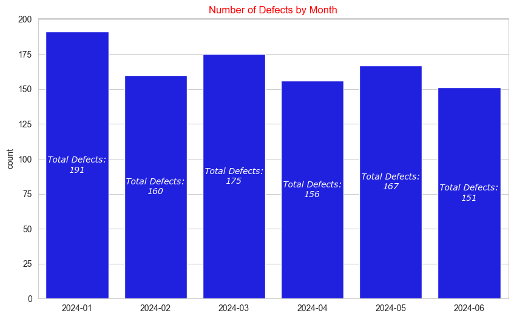
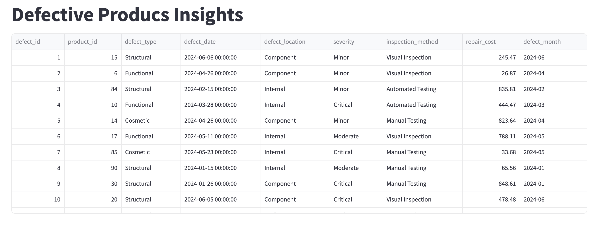
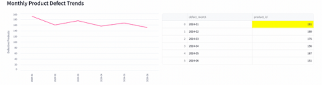

Building a Streamlit App for Product Defect Analysis
Project Overview
This project demonstrates how to build a Streamlit web application for analyzing product defects using data visualization techniques in Matplotlib and Seaborn. The dataset, sourced from Kaggle, contains product defect reports with repair costs, defect severity levels, and inspection methods. The goal is to generate insights through interactive visualizations and streamline data exploration.
✽ The full article can be found on my page on medium.com.
✽ The corresponding code can be found in github.
Table of Contents
- Creating Charts with Matplotlib and Seaborn
- Streamlit App: Getting Started
- Streamlit App: Interactive Visualizations
- Running the Streamlit App
1. Creating Charts with Matplotlib and Seaborn
The dataset consists of 1,000 rows and 8 columns, so we can process it quickly using Pandas.
The project goal is to explore the following questions and build charts to visualize the answers:
- How many defective products are reported on a monthly basis?
- How do repair costs vary by severity?
- How do trends in repair costs vary by inspection method?
Example: Monthly Defect Trends
Here is our resulting chart:

2. Streamlit App: Getting Started
Streamlit provides a Python-based framework for deploying data science applications with minimal effort. The app is structured in app.py, leveraging Streamlit's layout capabilities.
To get started with Streamlit, we first need to install it and then import it. Once installed, create a file called app.py, where we will import the necessary libraries for data manipulation and chart creation, and where we will built our first Streamlit app!
Installation and Setup
Example: Display Data as a Table in Streamlit:
Running the App
Once you have saved the file, you can run the app by doing the following in your terminal:
And Voila!

3. Streamlit App: Interactive Visualizations
Streamlit integrates seamlessly with Matplotlib and Seaborn, enabling dynamic visualizations. It can also create its own charts.
Example: Monthly Defects Line Chart
Our app now includes the line chart and table:

Example: Top Repair Costs
Imagine you are tasked with investigating which products incurred the highest repair costs. We can create a bar chart to show the top 10 products by repair cost and add it to app.py:
4. Running the Final Streamlit App
Once you're done adding all the bells and whistles to your app, go ahead and run it!